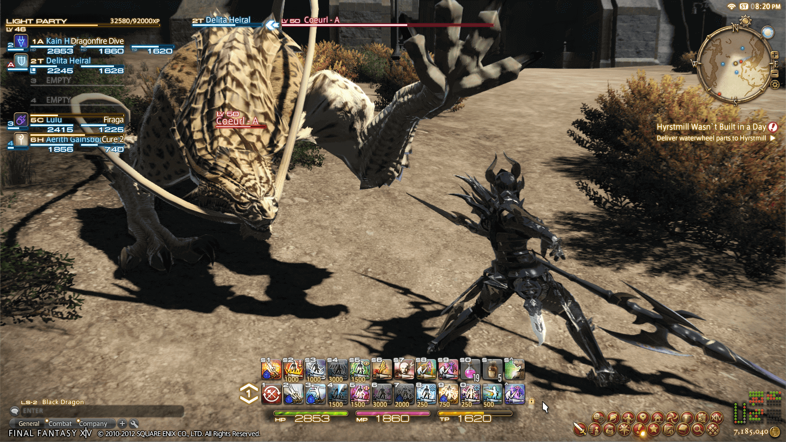
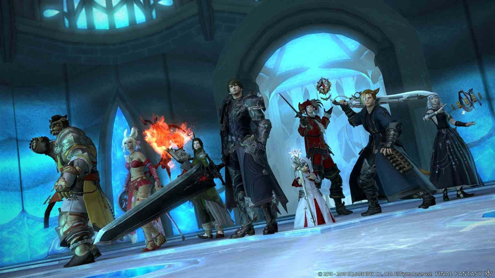
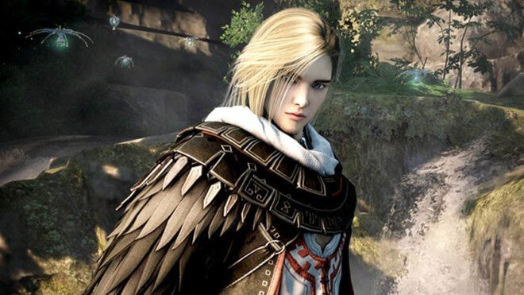
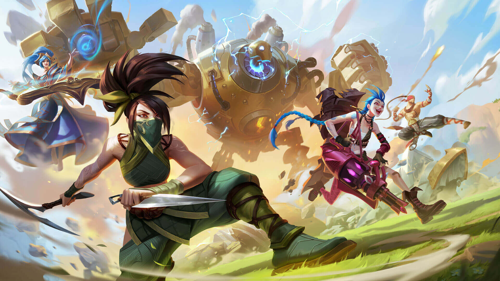

Explora un emocionante MMO de mundo abierto lleno de peligros y oportunidades en el que te forjarás un nuevo destino como aventurero naufragado en la isla sobrenatural de Ivallice. Un sinfín de oportunidades para luchar, forrajear y forjar te esperan entre la naturaleza y las ruinas de la isla. Canaliza fuerzas sobrenaturales o empuña armas mortales en un sistema de combate sin clases en tiempo real y lucha solo, con un equipo pequeño o en ejércitos masivos para batallas PvE y PvP: las opciones son todas tuyas.



Explora, construye y batalla en el contiente de Ivallice
Para sobrevivir y prosperar en Final Legends, deberá superar muchos desafíos y aprender nuevas habilidades y trucos a medida que avanza en la aventura. Los personajes progresan en tres categorías principales: Atributos básicos, Habilidades comerciales y Dominio de armas. Si bien eres libre de dominar tantas o tan pocas armas y habilidades comerciales como quieras, tus Atributos básicos finalmente gobiernan una gran parte de cuán poderoso eres en relación con las diversas criaturas hostiles y otros jugadores en Ivallice.

Personajes
Caballero Oscuro
 Tanque
Tanque
El piadoso clero ishgardiano guía al rebaño y los devotos caballeros protegen a los débiles. Sin embargo, incluso el más santo de los hombres sucumbe a la más oscura de las tentaciones. Nadie se atreve a administrar justicia a esta élite sacrosanta que reside fuera del alcance de la ley. ¿Quién, entonces, defiende a los débiles de las transgresiones de quienes deben guiarlos y protegerlos? Unos pocos valientes toman las armas para defender a los oprimidos, y ni siquiera los santos sacerdotes y caballeros pueden escapar a su juicio. Parias en su propia tierra, son conocidos por muchos como "caballeros oscuros". Estos centinelas no llevan escudos que declaren su lealtad. En cambio, sus grandes espadas actúan como faros para guiar a los mansos a través de la oscuridad.
Maga Blanca
 Protectora
Protectora
La magia blanca, el arcano arte de socorrer, fue concebida en épocas pasadas para que el mundo pudiera conocer el consuelo. Por desgracia, el hombre comenzó a pervertir sus poderes en beneficio propio y, con su maldad, provocó la sexta catástrofe del Umbral. Aunque posteriormente el arte quedó prohibido, ahora se encuentra en medio de un renacimiento a manos del Padjal, elegido de los elementales. Aquellos que seguirían el camino del mago blanco son sanadores sin igual, poseedores del poder de liberar a los camaradas de las más espantosas aflicciones, incluso de las garras heladas de la muerte misma.
Bard
 Rango Fisico
Rango Fisico
La palabra "bardo" normalmente recuerda a la gente a esos juglares itinerantes, de voz hermosa y ágiles de dedos, que se ganan su dinero actuando en tabernas y en los salones de los grandes señores. Sin embargo, pocos saben que los bardos, de hecho, tienen sus orígenes en los arqueros del campo, que cantaban en el fragor de la batalla para fortalecer el espíritu de sus compañeros. Con el tiempo, sus apasionados cantos llegaron a dominar los corazones de los hombres, inspirando a sus camaradas a realizar grandes hazañas y otorgando paz a quienes yacían al borde de la muerte.
Maga Roja
 Rango Magico
Rango Magico
En el borde oriental de la columna vertebral de Abalathia se encuentra la región montañosa de Gyr Abania. Es en estas tierras elevadas donde la gente se refugió, cuando una estrella ardiente los alejó de las traicioneras inundaciones de la Sexta Calamidad Umbral. Los supervivientes se reunieron de cerca y de lejos, y entre ellos había refugiados de las ciudades mágicas de Mhach y Amdapor. Estos enemigos jurados enterraron su historia por el bien del futuro y dejaron a un lado sus vestiduras de blanco y negro. Sobre los restos de sus artes se construyó una nueva disciplina, y los primeros magos rojos dieron un paso al frente con estoques en la mano para luchar contra las crecientes mareas de destrucción.
Dragoon
 Melee Fisico
Melee Fisico
De todas las cosas que simbolizan la nación de Ishgard, pocas son más reconocidas que el dragón. Nacidos en medio del eterno conflicto entre hombres y dragones, estos caballeros con lanzas han desarrollado un estilo de combate aéreo, para que puedan perforar mejor las pieles escamosas de sus enemigos mortales. Tomando el firmamento como si fuera una extensión de la tierra, descienden sobre el enemigo con cada onze de sus cuerpos detrás del golpe. Es este poder de penetración lo que caracteriza al dragón.